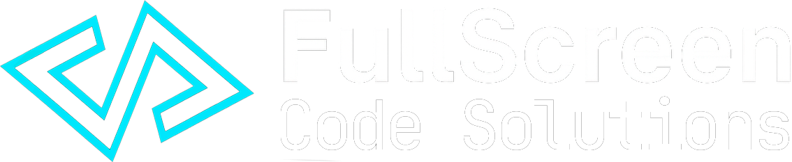

01
Desarrollador y fundador
FullScreen Code Solutions
Estudio de desarrollo de software para instalaciones interactivas, proyectos multimediales y desarrollo web. Dirijo el equipo y el stack técnico: gráfica en tiempo real, hardware interactivo, backends y puesta en escena.